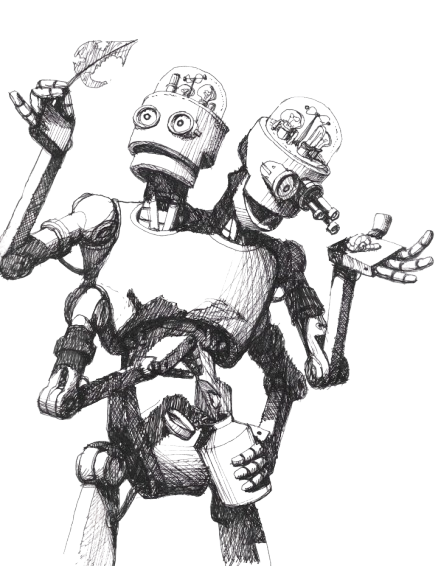

Bienvenido a mi blog...
Acá encontrará desde información general para conocer los distintos paradigmas de programación que existen hasta referencia técnica detallada para empezar a programar en la web.
Visita el código de esta página
Acá encontrará desde información general para conocer los distintos paradigmas de programación que existen hasta referencia técnica detallada para empezar a programar en la web.
Visita el código de esta página